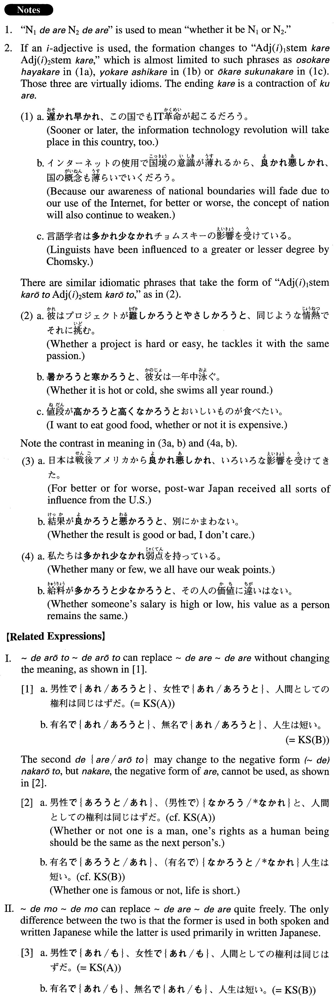

←
DoJG
→
～であれ～であれ
(A. 71)
Example sentences
(ksa).
男性
であれ
、女性
であれ
、人間としての権利は同じはずだ。
Whether one is a man or a woman, one's rights as a human being should be the same.
(ksb).
有名
であれ
、無名
であれ
、人生は短い。
No matter if one is famous or nameless, life is short.
(a).
ここは春
であれ
秋
であれ
美しいから観光に向いている。
Whether spring or fall, this place is beautiful, so it is a good sightseeing spot.
(b).
イスラエル人
であれ
、パレスチナ人
であれ
、平和を望んでいることでは同じはずだ。
Whether an Israeli or a Palestinian, their hope for peace should be the same.
(c).
彼は和食
であれ
、洋食
であれ
、何でも食べてしまう。
He eats anything, Japanese- or Western-style food.
(d).
あの学者は哲学
であれ
、言語学
であれ
、人類学
であれ
、同じように精通している。
That scholar is well-versed in a number of subjects, whether it be philosophy, linguistics or anthropology.
(e).
平日
であれ
、週末
であれ
、健太は仕事に追われている。
Whether weekday or weekend, Kenta is always pressed by work.
(f).
写真
であれ
、コンピュータグラフィックス
であれ
、求められたイメージを表現するのは大変難しい。
Whether in photography or in computer graphics, it is hard to produce an image as requested.
(g).
場所が便利
であれ
、不便
であれ
、マイホームが持ちたい。
Whether the location is convenient or inconvenient, I'd like to have my own house.
Formation
(i)
Noun
1
であれ
、Noun
2
であれ
夏
であれ
、冬
であれ
Whether it is summer or winter
(ii)
Adjective な1 stem
であれ
、Adjective な2 stem
であれ
便利
であれ
、不便
であれ
Whether something is convenient or inconvenient
